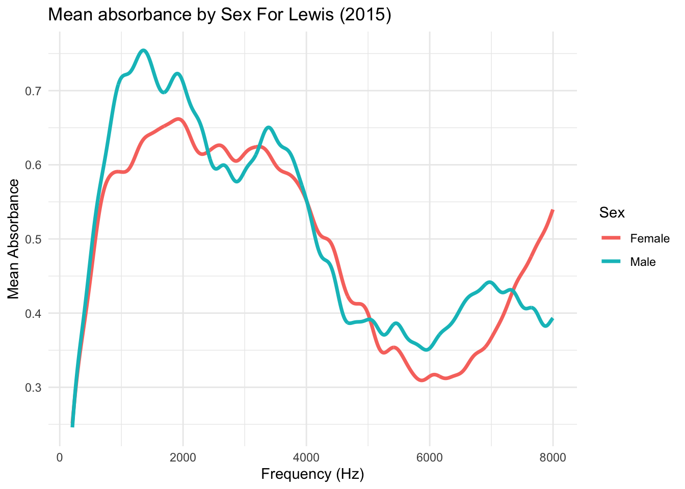

library(tidyverse)
library(RMariaDB)Wideband Acoustic Immittance Data Visualization
Graph Replication With SQL
Objective
- Replicate Figure 1 from Voss (2020) using SQL and R:
- Query the WAI Database to build a dataset.
- Pipe it into
ggplot()to recreate Figure 1.
- Analyze the Lewis (2015) study by sex:
- Plot frequency vs. mean absorbance by sex for the Lewis (2015) data.
Libraries
The libraries used in the project are the tidyverse and RMariaDB.
Setting Up Connection
I will use the Wideband Acoustic Immittance (WAI) Database, which I will access through SQL. The following is the connection.
con_wai <- dbConnect(
MariaDB(), host = "scidb.smith.edu",
user = "waiuser", password = "smith_waiDB",
dbname = "wai"
)
Measurements <- tbl(con_wai, "Measurements")
PI_Info <- tbl(con_wai, "PI_Info")
Subjects <- tbl(con_wai, "Subjects")Exploring The Database
There are seven datasets in the database. To achieve our objectives, we will use the Measurements, Subjects, and PI_Info datasets.
SHOW TABLES;| Tables_in_wai |
|---|
| Codebook |
| Measurements |
| Measurements_pre2020 |
| PI_Info |
| PI_Info_OLD |
| Subjects |
| Subjects_pre2020 |
From the Measurements database, I will use the Identifier variable to join with the PI_Info dataset. I will also use the variables Frequency and Absorbance for plotting. Additionally, I will analyze the variables Ear and Instrument to determine the number of ears and the types of instruments used in each study.
DESCRIBE Measurements;| Field | Type | Null | Key | Default | Extra |
|---|---|---|---|---|---|
| Identifier | varchar(50) | NO | PRI | NA | |
| SubjectNumber | int | NO | PRI | NA | |
| Session | int | NO | PRI | NA | |
| Ear | varchar(50) | NO | PRI | ||
| Instrument | varchar(50) | NO | PRI | ||
| Age | float | YES | NA | ||
| AgeCategory | varchar(50) | YES | NA | ||
| EarStatus | varchar(50) | YES | NA | ||
| TPP | float | YES | NA | ||
| AreaCanal | float | YES | NA |
We will use the PI_Info dataset by joining it with the Measurements dataset using the Identifier variable. From this dataset, we will extract the Year of the study and the AuthorsShortList to include in the legend.
DESCRIBE PI_Info;| Field | Type | Null | Key | Default | Extra |
|---|---|---|---|---|---|
| Identifier | varchar(50) | NO | PRI | NA | |
| Year | int | NO | NA | ||
| Authors | text | NO | NA | ||
| AuthorsShortList | text | NO | NA | ||
| Title | text | NO | NA | ||
| Journal | text | NO | NA | ||
| URL | text | NO | NA | ||
| Abstract | text | NO | NA | ||
| DataSubmitterName | text | NO | NA | ||
| DataSubmitterEmail | text | NO | NA |
Research Replication
I will begin by replicating the graph from Voss (2020). To do this, I will join the datasets Measurements and PI_Info using the Identifier key variable. I will extract the variable and calculate the mean of Absorbance for each value of Frequency. Additionally, I will create a label for each study using the relevant information from the datasets. Finally, I will save the resulting dataset as replication_data.
SELECT
m.Frequency,
AVG(m.Absorbance) as mean_absorbance,
CONCAT(pi.AuthorsShortList, " (", pi.Year, ") N=", COUNT(DISTINCT m.SubjectNumber, m.Ear), "; ", m.Instrument) AS label
FROM Measurements as m
INNER JOIN PI_Info AS pi ON m.Identifier=pi.Identifier
WHERE m.Identifier IN ( "Abur_2014", "Feeney_2017", "Groon_2015",
"Lewis_2015", "Liu_2008", "Rosowski_2012",
"Shahnaz_2006", "Shaver_2013", "Sun_2016",
"Voss_1994", "Voss_2010", "Werner_2010")
AND m.Frequency <= 8000 AND m.Frequency >= 200
GROUP BY m.Identifier, Instrument, Frequency;I created a custom color palette to match the lines in the graphs I am replicating.
custom_colors <- c(
"#5C4E9E",
"#387BBC",
"#5FB8A9",
"#99D59F",
"#D9F0A7",
"#ECF5AF",
"#F7EEAF",
"#F8D37E",
"#EC9D57",
"#E46647",
"#C9384D",
"#9C2045"
)
color_map <- setNames(custom_colors, unique(replication_data$label))Now, I will use the replication_data to create a graph that replicates the original. I will use the color_map variable to apply the custom color template.
replication_data |>
ggplot(aes(x = Frequency, y = mean_absorbance, color = label)) +
geom_line(size = 1) +
scale_x_continuous(
trans = "log10",
breaks = c(200, 400, 600, 800, 1000, 2000, 4000, 6000, 8000),
labels = scales::label_number()) +
theme_light() +
scale_color_manual(values = color_map) +
guides(color = guide_legend(ncol = 1)) +
theme(
legend.title = element_text(size = 10),
legend.text = element_text(size = 8),
legend.key.size = unit(0.5, "cm"),
legend.spacing.y = unit(0.5, "cm")) +
labs(
x = "Frequency (Hz)",
y = "Mean Absorbance",
title = "Mean absorbance from each publication in WAI database",
color = "")
Graphing by Sex
In the Subjects database, we will use the Identifier as a key to connect the datasets. Additionally, we will use the variable Sex to analyze the difference in mean absorbance by sex. We will join this database with Measurments database.
DESCRIBE Subjects;| Field | Type | Null | Key | Default | Extra |
|---|---|---|---|---|---|
| Identifier | varchar(50) | NO | PRI | NA | |
| SubjectNumber | int | NO | PRI | NA | |
| SessionTotal | int | NO | NA | ||
| AgeFirstMeasurement | float | YES | NA | ||
| AgeCategoryFirstMeasurement | varchar(50) | YES | NA | ||
| Sex | varchar(50) | NO | NA | ||
| Race | varchar(50) | NO | NA | ||
| Ethnicity | varchar(50) | NO | NA | ||
| LeftEarStatusFirstMeasurement | varchar(50) | NO | NA | ||
| RightEarStatusFirstMeasurement | varchar(50) | NO | NA |
Now, I will join the Subjects dataset with the Measurement dataset to plot a similar graph, but focusing only on the research from Lewis_2015 and grouped by Sex.
SELECT
m.Identifier,
m.Frequency,
AVG(m.Absorbance) as mean_absorbance,
s.Sex
FROM Measurements as m
INNER JOIN Subjects AS s ON m.SubjectNumber=s.SubjectNumber AND
m.Identifier=s.Identifier
WHERE m.Identifier IN ("Lewis_2015") AND m.Frequency <= 8000 AND m.Frequency >= 200
GROUP BY Identifier, Frequency, Sex;Now, I will graph the mean_absorbance against Frequency, grouped by Sex, for the Lewis_2015 research data.
absorbance_by_sex |>
ggplot(aes(x = Frequency, y = mean_absorbance, color = Sex)) +
geom_line(size = 1.25)+
theme_minimal() +
labs(
x = "Frequency (Hz)",
y = "Mean Absorbance",
title = "Mean absorbance by Sex For Lewis (2015)",
color = "Sex"
)
The graph follows a similar pattern to the previously replicated graph. However, males have slightly higher mean absorbance at the start, and then there is a slight increase in mean absorbance for males around 6000. Finally, at the rightmost end, females show a much higher mean absorbance.